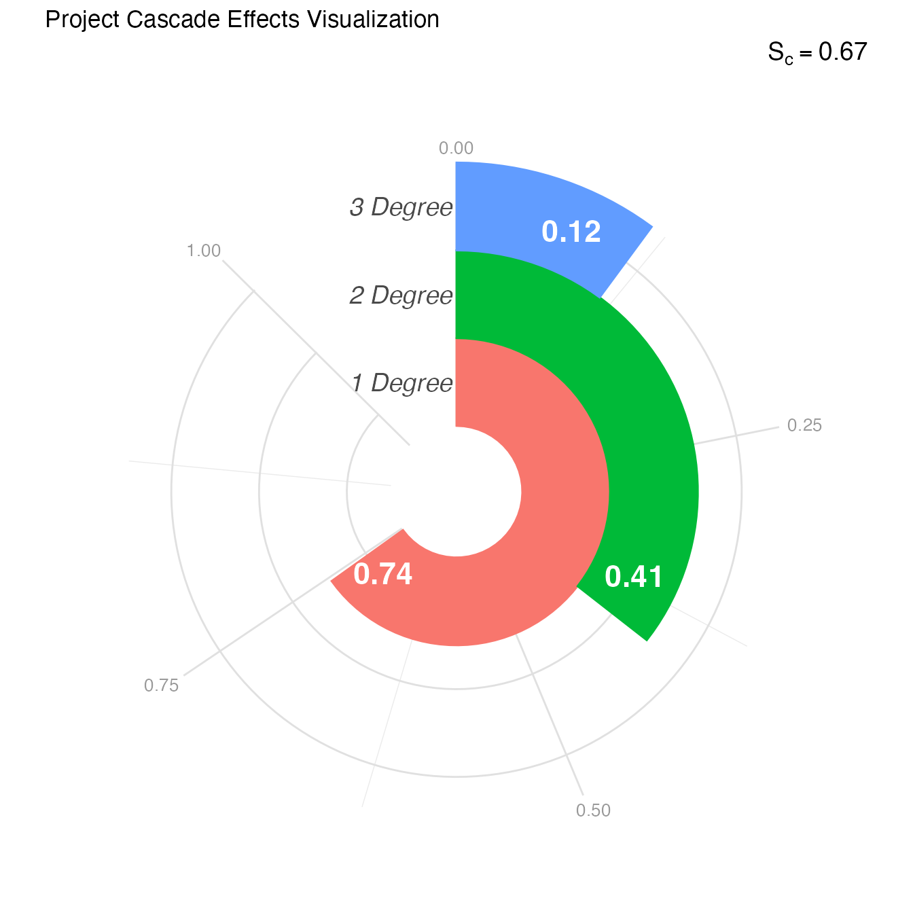

What Are Cascade Effects?
The Cascade Effects Score (Sc) measures the potential for information and power to spread through your project’s social network across three degrees of separation. It’s based on a fundamental insight from community-engaged research: direct participants aren’t the whole story.
When you train community health workers (1st degree), they teach their neighbors (2nd degree), who influence their extended networks (3rd degree). When you work with parent leaders, their impact ripples through schools, neighborhoods, and social groups. Cascade Effects quantifies this ripple.
Unlike traditional evaluation that counts only direct participants, cascade analysis recognizes that community work creates waves of influence. A project reaching 50 people directly but catalyzing three degrees of cascade achieves fundamentally different impact than one reaching 200 with no ripple effect.
Why Three Degrees?
While the famous “six degrees of separation” theory suggests global interconnectedness, research shows that direct personal influence extends to about three degrees (Christakis & Fowler, 2009). Beyond three degrees, information becomes diluted and influence weakens substantially.
The three degrees in community-engaged research:
- 1st Degree: Core participants directly involved (faculty, staff, students, primary community partners)
- 2nd Degree: Immediate networks of core participants—people they’re likely to share project experiences with meaningfully
- 3rd Degree: Individuals within broader community that 2nd degree participants are likely to influence through shared knowledge or experiences
How Cascade Differs from Ripple Mapping
If you’re familiar with ripple effects mapping (Chazdon et al., 2017), Cascade Effects takes a related but distinct approach:
| Ripple Mapping | Cascade Effects |
|---|---|
| Qualitative visualization | Quantitative network analysis |
| Documents actual spread | Models potential spread |
| Created through facilitated dialogue | Calculated from network structure |
| Shows what happened | Predicts what could happen |
Both are valuable—ripple mapping captures lived experiences of impact, while cascade analysis reveals structural capacity for information/power distribution.
The Four Network Properties
Cascade Effects examines four properties that together reveal how well information and power can spread:
1. Bridging (Connecting Separate Groups)
What it measures: People who connect different groups that wouldn’t otherwise interact much
Social network metrics: Structural holes (constraint) + Degree centrality on the inter-layer graph
Why it matters: Without bridge builders, information stays siloed within specific communities or sectors. Bridges enable knowledge to travel between different neighborhoods, organizations, demographic groups, or social circles.
High bridging looks like: - A community health worker who participates in both the Latinx parent group and the neighborhood association - A researcher who sits on university and community foundation boards - A youth leader active in both their high school and the mosque
Low bridging looks like: - Core team members all come from the same organization - Participant networks don’t overlap with each other - Information doesn’t cross demographic or geographic boundaries
2. Channeling (Controlling Information Flow)
What it measures: People who serve as key gateways or bottlenecks for information
Social network metrics: PageRank (local flow) + Harmonic centrality (global transmission) on the inter-layer graph
Why it matters: Channelers control whether and how quickly information spreads. They can either accelerate sharing or become bottlenecks that restrict flow. In healthy networks, channeling is distributed; in problematic ones, it’s concentrated.
High channeling looks like: - Multiple pathways for information to flow - Distributed communication responsibility - Information reaches people through various routes
Low channeling looks like: - Single person acts as information gatekeeper - If one or two people stop participating, information flow collapses - Communication bottlenecks slow knowledge sharing
3. Knitting (Strengthening Social Fabric)
What it measures: People who connect influential individuals within communities, creating cohesive networks
Social network metrics: Community centrality + Eigenvector centrality
Why it matters: Knitters create resilient social structures by linking leaders, elders, and influential community members. When influential people are connected to each other, communities can sustain themselves and spread information even without external facilitation.
High knitting looks like: - Community elders who know and work with each other - Organizational leaders who collaborate regularly - Influential members who form collective leadership structures
Low knitting looks like: - Influential people isolated from each other - Leaders who don’t know what other leaders are doing - Fragmented leadership unable to coordinate collective action
4. Reaching (Accessing Network-Wide Information)
What it measures: People who balance trusted close relationships with diverse distant connections for broad information access
Social network metrics: Local transitivity + Harmonic centrality
Why it matters: Good reachers can both receive information from distant parts of the network and diffuse information widely. They connect tight-knit groups (trusted relationships) with distant network regions (diverse information).
High reaching looks like: - People with close friends who also know each other (trust) - Same people also connected to distant network regions (diversity) - Ability to access and share information across the entire network
Low reaching looks like: - Isolated clusters with no cross-cluster connections - People only connected to immediate neighbors - Limited ability to access or spread information broadly
Understanding the Overall Cascade Score
How It’s Calculated
The overall Cascade Effects Score (Sc) uses the complement of the Gini coefficient applied to the degree scores. The Gini coefficient measures inequality; its complement measures balance.
Scores closer to 1 indicate information and power can spread more evenly across all three degrees. Lower scores indicate concentration in the 1st degree with poor distribution outward.
Interpretation Guidelines
| Sc Range | Interpretation | What This Means |
|---|---|---|
| < 0.50 | Very Low Balance | Impact highly concentrated in core; minimal cascade |
| 0.50 - 0.59 | Low Balance | Some spread to 2°, but significant drop-off by 3° |
| 0.60 - 0.69 | Moderate Balance | Reasonable distribution with gaps to address |
| 0.70 - 0.79 | High Balance | Strong potential for widespread distribution |
| ≥ 0.80 | Very High Balance | Excellent capacity for information/power spread |
Example: Interpreting Your Cascade Score
Let’s work through the example from the Getting Started vignette:
# Generate example cascade data
cascade_data <- generate_cascade_data(seed = 36)
# Analyze cascade effects
cascade_results <- analyze_cascade(cascade_data)
#> Running full exact analysis (~356 expected edges).
# View overall score
print(cascade_results$cascade_score)
#> [1] 0.6689556What Sc = 0.65 Tells Us
A Cascade Effects Score of 0.65 indicates moderate balance—information and power can spread reasonably well to the 2nd degree but face barriers reaching the 3rd degree. This is common but improvable.
Now let’s examine where the barriers lie:
# View degree-level summary
print(cascade_results$summary)
#> # A tibble: 3 × 9
#> layer count gamma layer_knitting layer_bridging layer_channeling
#> <int> <int> <dbl> <dbl> <dbl> <dbl>
#> 1 1 10 0.9 0.462 0.866 0.768
#> 2 2 40 0.5 0.311 0.671 0.525
#> 3 3 80 0.45 0.304 0.0214 0.117
#> # ℹ 3 more variables: layer_reaching <dbl>, layer_score <dbl>,
#> # layer_number <chr>Interpreting Degree-Level Scores
1st Degree (Core Participants)
1° score: 0.69 (10 people)
Bridging: 0.70 | Channeling: 0.68 | Knitting: 0.70 | Reaching: 0.69Interpretation: Your core team has excellent
connectivity. All four properties score in the 0.68-0.70 range,
indicating: - Core participants connect different groups well (bridging)
- Information flows efficiently among them (channeling) - Influential
members are well-connected to each other (knitting)
- Team can access and spread information broadly (reaching)
What this means: You have a strong foundation. Core team relationships are healthy, communication works well, and leadership is cohesive. This is the bedrock for cascade—but it’s not sufficient alone.
2nd Degree (Immediate Networks)
2° score: 0.60 (29 people)
Bridging: 0.57 | Channeling: 0.57 | Knitting: 0.63 | Reaching: 0.61Interpretation: The 2nd degree shows moderate capacity with specific weaknesses:
Bridging (0.57): Friends and family of core participants aren’t effectively connecting different community subgroups. They may be talking within their own circles but not across them.
Channeling (0.57): Information pathways to 2nd degree are somewhat restricted. Core participants may not be strategically sharing in ways that empower 2nd degree to pass information along.
Knitting (0.63): Relatively better—influential people in 2nd degree have some connections to each other, though not as strong as in the core.
Reaching (0.61): Reasonable ability to access information, but could be stronger.
What this means: Your project’s impact reaches the immediate circles of core participants, but these connections aren’t strong enough to serve as effective bridges to broader communities. The 2nd degree needs more intentional engagement.
3rd Degree (Broader Community)
3° score: 0.31 (45 people)
Bridging: 0.32 | Channeling: 0.33 | Knitting: 0.29 | Reaching: 0.30Interpretation: The 3rd degree shows weak capacity across all properties:
Bridging (0.32): Limited connections between different groups at this distance from the core
Channeling (0.33): Few effective pathways for information to flow this far out
Knitting (0.29): The weakest property—influential people in the broader community aren’t connected to each other, creating fragmented rather than cohesive networks
Reaching (0.30): Minimal ability for these community members to access or diffuse information
What this means: Your project’s structural capacity for impact largely stops at the 2nd degree. The broader community remains largely disconnected, and influential leaders in that space aren’t forming the collaborative networks needed to sustain and spread your work.
Visualizing Cascade Effects
# Create racetrack visualization
plot_cascade <- visualize_cascade(cascade_results)
print(plot_cascade)
Reading the Racetrack Plot
This radial visualization (inspired by W.E.B. DuBois’ pioneering data visualizations) shows:
- Rings: Each represents a degree (1°, 2°, 3° from center outward)
- Spokes: Four spokes per ring represent the four properties
- Spoke length: Longer = higher score for that property at that degree
Visual patterns to notice:
- Shrinking pattern: Spokes get shorter moving outward (typical cascade decay)
- Uniform shrinkage: All properties decline together (systemic limitation)
- Specific short spokes: Individual properties notably weaker (targeted intervention opportunity)
- Abrupt drops: Sharp decline between degrees (structural barriers)
In our example, you can see: - Strong, relatively equal spokes at 1° (solid core) - Moderate, slightly uneven spokes at 2° (bridging/channeling slightly weaker) - Short, very weak spokes at 3° (especially knitting)
What Different Cascade Patterns Mean
Pattern 1: Strong Core, Weak Periphery
Example: 1° = 0.70, 2° = 0.50, 3° = 0.30Interpretation: Project team well-connected internally but impact doesn’t cascade outward. Common in early-stage projects or insular research teams.
Why it happens: - Team focused on building internal capacity first - Limited intentional engagement of extended networks - Core participants not yet serving as community ambassadors - Project communications don’t reach beyond immediate circle
Actions to improve: 1. Identify “ambassador” roles for 2° participants 2. Create opportunities for 2° to engage directly (not just hear about it) 3. Develop communication strategies that travel through social networks 4. Support core participants in intentionally engaging their networks
Pattern 2: Bridging Deficit
Example: Bridging consistently 0.15-0.20 lower than other propertiesInterpretation: Information stays within silos rather than crossing between different community groups, organizations, or demographics.
Why it happens: - Team members all from similar backgrounds/sectors - No intentional cross-sector or cross-demographic engagement - Separate initiatives for different groups rather than integrated approach - Geographic or social boundaries limiting connection
Actions to improve: 1. Map community subgroups and their boundaries 2. Recruit “bridge builders” who span multiple communities 3. Design activities requiring cross-group collaboration 4. Create roles specifically focused on connecting different sectors 5. Ensure materials/events accessible across language and cultural barriers
Pattern 3: Knitting Collapse at 3°
Example: Knitting drops dramatically at 3° while other properties decline graduallyInterpretation: Influential people in broader community aren’t connected to each other, limiting sustainable impact even if information reaches them.
Why it happens: - Haven’t engaged community leadership structures - Leaders operating in isolation without collaboration infrastructure - Focus on grassroots without attention to influencer networks - Competitive rather than collaborative environment among leaders
Actions to improve: 1. Identify community influencers (elders, organizational leaders, cultural figures) 2. Create forums for these leaders to connect with each other 3. Form steering committees or advisory groups 4. Support collaborative initiatives among community organizations 5. Facilitate peer learning among influential community members
Pattern 4: Channeling Bottlenecks
Example: Channeling notably lower than other properties, especially at 2°Interpretation: Information flow restricted by bottlenecks—too few pathways or overly centralized communication.
Why it happens: - Single person (often PI) serving as information hub - No distributed communication strategy - Partners don’t have agency to share information independently - Gatekeeping (intentional or structural) limiting spread
Actions to improve: 1. Distribute communication responsibilities 2. Provide communication materials partners can share 3. Create multiple channels for information flow 4. Empower partners to speak about the work independently 5. Develop peer-to-peer communication strategies
Pattern 5: Uniform Decline
Example: All properties declining equally across degreesInterpretation: Natural cascade decay without specific structural barriers—simply distance from core reduces capacity.
Why it happens: - Limited project resources reaching extended networks - Passive rather than active cascade strategies - Reliance on organic spread without intentional support - Network structure naturally favors local over distant connections
Actions to improve: 1. Invest resources in reaching extended networks 2. Create incentives for 2° and 3° participation 3. Develop “train the trainer” models 4. Support 2° participants in becoming champions 5. Host “network weaving” events connecting multiple degrees
Network Size and Composition
The number of people at each degree provides important context:
# View people at each degree
cascade_results$summary[, c("layer", "count")]
#> # A tibble: 3 × 2
#> layer count
#> <int> <int>
#> 1 1 10
#> 2 2 40
#> 3 3 80Interpreting Network Size
Growing network (1° < 2° < 3°): - Natural expansion pattern - Each person connects to multiple others - Indicates good potential reach if quality connections develop
Shrinking network (1° > 2° > 3°): - May indicate isolation of core team - Limited connections to broader community - Suggests need to expand engagement
Stable network (similar sizes): - May indicate tight boundaries - Each degree not expanding reach - Could signal insular community or restricted engagement
In our example (10, 29, 45), we see healthy growth, but the low 3° scores indicate these are weak connections rather than robust relationships.
The Topology Score
# View topology score
print(cascade_results$topology_score)
#> [1] 0.2310191The topology score (0.18 in this example) reflects the overall network structure:
Components: - Connectedness: How well all nodes connect to each other - Efficiency: Speed of information transmission possible - Hierarchy (inverse): Flatness of power structure - Lubness (inverse): Distribution of leadership
Interpreting Topology Scores
| Score | Interpretation |
|---|---|
| < 0.30 | Hierarchical structure, potential bottlenecks, some disconnection |
| 0.30 - 0.50 | Moderate structure with some flat elements |
| 0.50 - 0.70 | Reasonably flat structure with distributed power |
| > 0.70 | Highly distributed, well-connected, efficient network |
A low topology score (< 0.30) reinforces that structural barriers exist. In our example, the 0.18 suggests hierarchy, efficiency bottlenecks, or disconnected segments limit cascade potential.
Using Cascade Scores by Project Stage
Early Stage (Year 1)
Expected patterns: - Strong 1° (building core team) - Moderate 2° (engaging immediate networks) - Weak 3° (not yet reached broader community)
Focus: Building a strong, well-connected core before worrying about extended reach
Red flags: Weak 1° scores suggest internal team needs attention first
Mid-Stage (Years 2-3)
Expected patterns: - Sustained strong 1° - Growing 2° scores (extended engagement taking hold) - Improving 3° (strategies starting to work)
Focus: Strengthening 2° connections and developing 3° strategies
Red flags: Declining 1° suggests core team deterioration; stagnant 2° indicates lack of cascade strategy
Late Stage (Year 3+)
Expected patterns: - Strong scores across all degrees - Balanced properties (no dramatic gaps) - Growing network size
Focus: Sustaining cascade, documenting spread, preparing for transition
Red flags: Weak 3° at this stage suggests impact won’t outlast project; topology score not improving indicates structural issues remain
Taking Action Based on Cascade Scores
Step 1: Identify Your Cascade Pattern
Look at your overall score, degree progression, and property weaknesses to determine which pattern(s) apply.
Step 2: Target Specific Weaknesses
| Issue | Targeted Actions |
|---|---|
| Low 1° | Focus internally: team-building, communication protocols, role clarity |
| Weak 2° | Ambassador programs, direct engagement opportunities, communication tools |
| Collapsed 3° | Community influencer engagement, network weaving events, collaborative structures |
| Bridge deficit | Cross-sector recruitment, boundary-spanning roles, integrated programming |
| Channel bottlenecks | Distributed communication, peer sharing, multiple pathways |
| Knit fragmentation | Leadership connections, steering committees, collaborative forums |
| Reach limitations | Train-the-trainer models, peer champions, accessible materials |
Step 3: Implement Network-Building Strategies
For improving 2° cascade: - Create “Champions
Program” where 1° actively engage their 2° networks - Host “bring a
friend” events lowering barriers to 2° participation
- Develop shareable materials 2° can use independently - Establish 2°
feedback mechanisms so they contribute ideas
For strengthening 3° connections: - Map community influencers and invite them into advisory roles - Create forums connecting different community organizations - Support peer learning networks among community leaders - Invest in relationship-building events at 3° level - Partner with existing community structures rather than creating new ones
For addressing property-specific issues: - Bridging: Intentionally recruit across boundaries, design cross-group activities - Channeling: Distribute communication roles, create multiple pathways - Knitting: Facilitate connections among leaders, support collaborative initiatives - Reaching: Develop hub-and-spoke models, support local champions
Step 4: Monitor Change Over Time
Run cascade analysis at regular intervals: - Quarterly during active network-building phases - Annually for longer-term projects - At major project milestones
Track: - Overall Sc trajectory - Degree score changes - Property improvements - Network size evolution - Topology score trends
Common Cascade Misinterpretations
Mistake 1: “Bigger networks are always better”
Not necessarily. A network of 100 poorly connected people has less cascade potential than 30 well-connected people. Quality of connections matters more than quantity.
Mistake 2: “Low cascade scores mean project failure”
Low scores in early stages are expected. Cascade develops over time as relationships deepen and strategies take effect.
Mistake 3: “We should focus only on expanding to 3°”
Weak 3° often indicates weak 2°. Strengthen the 2° first—trying to leapfrog rarely works.
Mistake 4: “Perfect balance across degrees is the goal”
Some natural decline is expected—influence diminishes with distance. Moderate balance (Sc 0.60-0.75) with strong absolute scores is excellent.
Mistake 5: “Cascade scores measure actual impact”
Cascade scores measure potential based on network structure. They predict capacity for spread, not guarantee it. Actual impact requires both structural capacity and quality content/relationships to spread.
Communicating About Cascade Effects
With Community Partners
Frame positively: “Our core team is really well-connected. Now let’s think about how we can help spread this work to more people in the community.”
Use the visual: The racetrack plot makes patterns immediately clear even for those unfamiliar with network analysis.
Co-interpret: Ask partners what they see in the patterns and what they think would help strengthen connections.
Focus on action: “What would help you share this work with people you know?”
With Funders
Emphasize innovation: Traditional evaluation counts direct participants; cascade demonstrates reach multiplication effect.
Show trajectory: If scores improve over time, demonstrate network-building success.
Connect to sustainability: Strong 3° cascade indicates work will continue beyond funding period.
Translate properties: Explain bridging/knitting/etc. in accessible language related to funder priorities.
For Promotion/Tenure
Contextualize reach: “While we directly engaged 30 community members, our cascade analysis shows potential reach to 85 people across three degrees.”
Document intentionality: Describe specific strategies used to strengthen cascade.
Show sophistication: Cascade analysis demonstrates advanced understanding of community impact.
Connect to transformation: Strong cascade indicates mutual transformation extending beyond core participants.
Conclusion
Cascade Effects scores reveal the structural capacity for your community-engaged work to spread and sustain itself. Key takeaways:
- Strong core is necessary but insufficient—impact must cascade outward
- Property-specific weaknesses indicate targeted action opportunities
- Natural decline is expected; the question is whether it’s gradual or precipitous
- Network structure matters as much as network size
- Cascade develops over time—early-stage weakness isn’t failure
- Intentional network-building strategies can improve cascade significantly
When used alongside other CEnTR*IMPACT metrics and qualitative assessment, cascade analysis helps you understand not just who you’ve reached, but how far your work can spread—and what barriers need addressing to extend that reach into the broader community.
References
Chazdon, S., Emery, M., Hansen, D., Higgins, L., & Sero, R. (2017). A Field Guide to Ripple Effects Mapping. University of Minnesota Libraries Publishing.
Christakis, N. A., & Fowler, J. H. (2009). Connected: The Surprising Power of Our Social Networks and How They Shape Our Lives. Little, Brown and Company.
Price, J. F. (2024). CEnTRIMPACT: Community Engaged and Transformative Research – Inclusive Measurement of Projects & Community Transformation* (CUMU-Collaboratory Fellowship Report). Coalition of Urban and Metropolitan Universities.